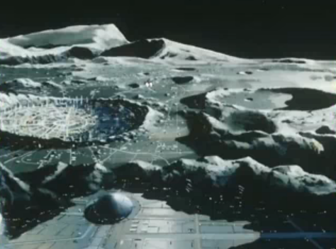

Von Braun City Von Braun City
Moon, Near Side Urban Fortress with attached Mine The largest city in the Earth Sphere that is not on the surface of the planet, Von Braun outdoes any single space colony both in population and in internal politics. The seat of the LMC is here, and the many levelled colony is home to both a populous upperclass, and a black underbelly at the bottom levels. It is also one of the most heavily defended neutral cities, even able to repel small attacks from the Duchy or Federation. Citizens of Von Braun are known to look out chiefly for themselves, and have a bad reputation amongst the Earth Sphere, and even amongst the rest of the cities on the moon. Von Braun City  |